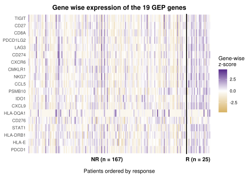
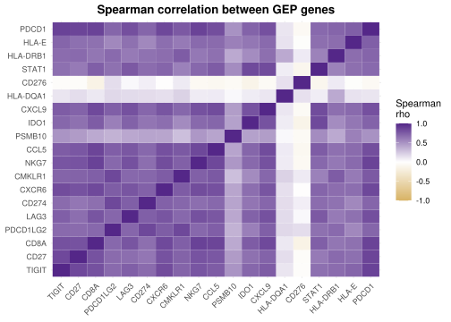
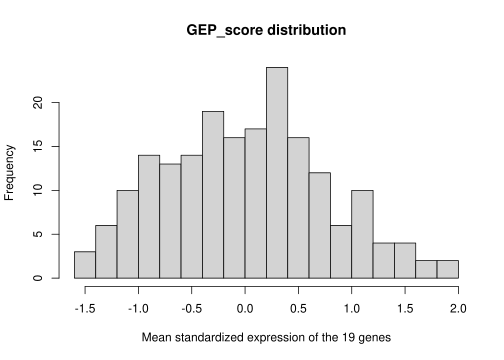
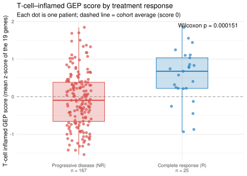

Are 18-gene T-cell–inflamed GEP (see D6; Ayers et al. (2017)) associated with treatment response?
Reference: 10.1172/JCI91190 (18 genes)
Suggested tasks:
Q2.1: Identify the 18 genes included in the published T-cell–inflamed GEP (gene expression profile) and examine their expression in the dataset.
Q2.2: Calculate a T-cell–inflamed GEP score for each patient.
Q2.3: Investigate whether patients with higher GEP scores are more likely to respond to anti-PD-L1 treatment.
Q2.4: Interpret the biological significance of your findings and discuss why a high T- cell–inflamed GEP score does not necessarily guarantee treatment response.
# align tpm to clinical tableclinical <- clinical[clinical$BOR %in%c("NR", "R"), ]stopifnot(all(clinical$sample_id %in%colnames(tpm)))# reorder tpm matrix columns to match with clinical tabletpm <- tpm[ , match(clinical$sample_id, colnames(tpm)), drop =FALSE]# verify output orderstopifnot(identical(as.character(clinical$sample_id), colnames(tpm)))
Dim() outputs [rows, columns], in our case [genes, samples], which follows good practice for expression datasets.
The counts and tpm matrices consist of 31087 genes and 192 patient samples.
The clinical matrix consist of 192 patient samples and 4 clinical variables.
TPM expression data is aligned to the clinical data, to ensure it contains the samples in correct order - to avoid incorrect GEP scoring –> patient matching
Q2.1: Identify the 18 genes included in the published T-cell–inflamed GEP (gene expression profile) and examine their expression in the dataset.
# STEP 3: Extract + logtransform g.expression (tpm)# IMPORTANT TO LOG TRANSFORM (visualization + scoring)GEP_expression <-log2(tpm[GEP_genes, , drop =FALSE] +1 )dim(GEP_expression) # 192 patients
[1] 19 192
#STEP 4: Checking expression# per genesummary(t(GEP_expression))
TIGIT CD27 CD8A PDCD1LG2
Min. :0.000 Min. :0.000 Min. :0.09415 Min. :0.1129
1st Qu.:0.643 1st Qu.:1.654 1st Qu.:1.70406 1st Qu.:1.0599
Median :1.055 Median :2.641 Median :2.77960 Median :1.5674
Mean :1.103 Mean :2.655 Mean :2.73495 Mean :1.7026
3rd Qu.:1.501 3rd Qu.:3.537 3rd Qu.:3.68324 3rd Qu.:2.2688
Max. :3.574 Max. :6.679 Max. :6.35217 Max. :4.2946
LAG3 CD274 CXCR6 CMKLR1
Min. :0.1879 Min. :0.05654 Min. :0.000 Min. :0.2906
1st Qu.:1.1594 1st Qu.:0.83699 1st Qu.:1.013 1st Qu.:1.3130
Median :1.9500 Median :1.22049 Median :1.619 Median :1.9942
Mean :2.0276 Mean :1.50695 Mean :1.687 Mean :1.9454
3rd Qu.:2.6584 3rd Qu.:2.03262 3rd Qu.:2.287 3rd Qu.:2.6036
Max. :5.5880 Max. :4.82013 Max. :4.926 Max. :3.9432
NKG7 CCL5 PSMB10 IDO1
Min. :0.0000 Min. :0.09868 Min. :3.875 Min. :0.06869
1st Qu.:0.4794 1st Qu.:2.32266 1st Qu.:5.128 1st Qu.:2.32632
Median :1.0603 Median :3.58383 Median :5.606 Median :3.72807
Mean :1.1695 Mean :3.49978 Mean :5.610 Mean :3.76133
3rd Qu.:1.6716 3rd Qu.:4.38222 3rd Qu.:6.062 3rd Qu.:5.18204
Max. :3.9072 Max. :8.41038 Max. :7.379 Max. :9.93777
CXCL9 HLA-DQA1 CD276 STAT1
Min. :0.000 Min. :0.0000 Min. :1.856 Min. : 5.953
1st Qu.:1.579 1st Qu.:0.0000 1st Qu.:3.907 1st Qu.: 7.544
Median :3.413 Median :0.0000 Median :4.307 Median : 8.267
Mean :3.474 Mean :0.2790 Mean :4.271 Mean : 8.255
3rd Qu.:5.124 3rd Qu.:0.4035 3rd Qu.:4.707 3rd Qu.: 8.959
Max. :8.041 Max. :2.6804 Max. :6.196 Max. :11.048
HLA-DRB1 HLA-E PDCD1
Min. :1.543 Min. : 6.362 Min. :0.0000
1st Qu.:5.048 1st Qu.: 8.317 1st Qu.:0.2702
Median :5.923 Median : 8.723 Median :0.6733
Mean :5.840 Mean : 8.729 Mean :0.8019
3rd Qu.:6.855 3rd Qu.: 9.147 3rd Qu.:1.1944
Max. :8.601 Max. :10.282 Max. :2.6654
# median expression per geneapply(GEP_expression, 1, median)
# inspecting HLA-DQA1 low gene counts (TPM)# extract tpm for HLA-DQA1 + log transformed expression + add BORHLA_DQA1 <-data.frame(TPM =as.numeric(tpm["HLA-DQA1", ]),GEP_expression =as.numeric(GEP_expression["HLA-DQA1", ]),BOR = clinical$BOR)# nr of patients with zero expression in each response groupwith(HLA_DQA1, table(BOR, zero_exression = GEP_expression ==0))
zero_exression
BOR FALSE TRUE
NR 54 113
R 9 16
# count patients in each response grouptable(clinical$BOR, useNA ="ifany")
NR R
167 25
# percantagewith( HLA_DQA1, tapply(GEP_expression ==0, BOR, function(x) mean(x) *100))
NR R
67.66467 64.00000
Checking the gene name format to ensure same format is used (dataset vs subset of T cell inflammed genes)
Most genes are expressed in most patients, except HLA-DQA1.
HLA-DQA1 has a TPM expression of 0 in 129 out of 192 samples, specifically:
113 out of 167 NR patients, corresponding to ~68%
16 out of 25 R patients, corresponding to 64%
# STEP 5: Visualize GEP expression and gene-gene correlations# color scaleheatmap_colours <-colorRampPalette(c("#D8B365", "white", "#542788"))(100)########################## gene expression heatmap########################## standardize each gene across patientsGEP_heatmap_scaled <-t(scale(t(GEP_expression)))# order patients by response (NR --> R)ord <-order(factor(clinical$BOR, levels =c("NR", "R")))GEP_heatmap_scaled <- GEP_heatmap_scaled[, ord]# long format (one row per gene-patient combo)heatmap_df <-as.data.frame(as.table(GEP_heatmap_scaled))colnames(heatmap_df) <-c("Gene", "Sample", "Expression")# keep patient order and display genes in panel orderheatmap_df$Sample <-factor(heatmap_df$Sample,levels =colnames(GEP_heatmap_scaled))heatmap_df$Gene <-factor(heatmap_df$Gene,levels =rev(rownames(GEP_heatmap_scaled)))# group sizes (for split line + labels)n_NR <-sum(clinical$BOR =="NR")n_R <-sum(clinical$BOR =="R")# symmetric limits keep white at z-score 0z_max <-max(abs(heatmap_df$Expression))ggplot(heatmap_df, aes(x = Sample, y = Gene, fill = Expression)) +geom_tile() +geom_vline(xintercept = n_NR +0.5, linetype ="solid",color ="black", linewidth =0.8) +annotate("text", x = n_NR /2, y =-Inf,label =paste0("NR (n = ", n_NR, ")"),vjust =1.8, fontface ="bold") +annotate("text", x = n_NR + n_R /2, y =-Inf,label =paste0("R (n = ", n_R, ")"),vjust =1.8, fontface ="bold") +scale_fill_gradientn(colours = heatmap_colours,limits =c(-z_max, z_max),name ="Gene-wise\nz-score") +coord_cartesian(clip ="off") +labs(title ="Gene wise expression of the 19 GEP genes",x ="Patients ordered by response", y =NULL) +theme_minimal() +theme(axis.text.x =element_blank(),axis.title.x =element_text(margin =margin(t =30)),panel.grid =element_blank(),plot.title =element_text(hjust =0.5, face ="bold"),plot.margin =margin(10, 5.5, 10, 5.5))

########################## gene gene spearman correlation heatmap########################## genes need non-zero variancegene_sd <-apply(GEP_expression, 1, sd)stopifnot(all(is.finite(gene_sd)), all(gene_sd >0))gene_cor <-cor(t(GEP_expression), method ="spearman")cor_df <-as.data.frame(as.table(gene_cor))colnames(cor_df) <-c("Gene_1", "Gene_2", "Correlation")ggplot(cor_df, aes(x = Gene_1, y = Gene_2, fill = Correlation)) +geom_tile() +scale_fill_gradientn(colours = heatmap_colours,limits =c(-1, 1),name ="Spearman\nrho") +labs(title ="Spearman correlation between GEP genes",x =NULL, y =NULL) +theme_minimal() +theme(axis.text.x =element_text(angle =45, hjust =1),plot.title =element_text(hjust =0.5, face ="bold"))

Heatmap:
Used to suggest patterns
GEP_expression heatmap:
Each row = gene (standardized across all 192 patients) and each column = patient
Colors represent the gene wise z scores across patients (and not absolut TPM values, cannot compare between genes)
Purple = expression of that gene is ABOVE the average
Golden = expression of that gene is BELOW the average
Patients ordered by response group
Gene-gene spearman correlation heatmap:
Rows + cols = genes
Correlation coefficients describe the gene-gene patterns (+/- = direction, size = strength), but not statistical significance or treatment response
Positive correlation = patients with higher expression of gene X tend to have higher expression of gene Y
Negative correlation = patients with higher expression of gene X tend to have lower expression of gene Y
The correlation does not = similar absolute expression values
Q2.2: Calculate a T-cell–inflamed GEP score for each patient.
Standardize each gene across patients (avoid dominating genes)
Average across the 19 genes per patient (1 nr per patient –> if high => more inflamed compared to other patients)
# STEP 1: confirming datadim(GEP_expression)
[1] 19 192
stopifnot(identical(colnames(GEP_expression),as.character(clinical$sample_id)))# STEP 2: Check no gene is constant (0 var cant be standardized)gene_sd <-apply(GEP_expression, 1, sd)gene_sd
sample_id BOR GEP_score Response_binary
SAM7f0d9cc7f001 SAM7f0d9cc7f001 NR 0.318401013 0
SAM4305ab968b90 SAM4305ab968b90 NR -1.239978288 0
SAMcf018fee2acd SAMcf018fee2acd NR 0.005035935 0
SAMcc4675f394a1 SAMcc4675f394a1 NR -0.727346670 0
SAM49f9b2e57aa5 SAM49f9b2e57aa5 NR -0.665720135 0
SAM2e7aa8fa0ab3 SAM2e7aa8fa0ab3 NR -0.029292773 0
table(df$BOR, useNA ="ifany") #add NA column if any present
NR R
167 25
# STEP 6: visualizehist( df$GEP_score,breaks =20,main ="GEP_score distribution",xlab ="Mean standardized expression of the 19 genes" )

# summary per response grouptapply(df$GEP_score, df$BOR, median)
NR R
-0.09614054 0.67601370
GEP score (cohort relative, not universally true)
Positive score = indicative of a higher average standardized expression (relative to this cohort)
Negative score = indicative of a lower average standardized expression (relative to this cohort)
Summary per response group:
Responders have a higher median T cell inflammed GEP score (~0.676), compared to patients with progressive disease (~-0.096)
Could indicate a more active T cell inflammation profile in responders
Q2.3: Investigate whether patients with higher GEP scores are more likely to respond to anti-PD-L1 treatment.
AKA is the score associated with the treatment response?
= Compare GEP score to response group
Our df is defined with NR as reference group
Wilcon rank sum test = compare 2 independent groups (without assuming normal distr.) (rec week6)
0 hyp: scores in the 2 groups come from the same distribution
# group comparison from w6 exercises# reusing df from 2.2# STEP 1: Test difference between NR and R groups (wilcoxon rank sum test)GEP_response_test <-wilcox.test( GEP_score ~ BOR,data = df,exact =FALSE)GEP_response_test
Wilcoxon rank sum test with continuity correction
data: GEP_score by BOR
W = 1105, p-value = 0.0001509
alternative hypothesis: true location shift is not equal to 0
# STEP 2: Plot difference# helper function from w6 ex (advanced)plot_Response_boxplot <-function(data, variable, y_label, test_result) {# keep the groups in order data$BOR <-factor(data$BOR, levels =c("NR", "R"))# descriptive response labels with patient counts n_per_group <-table(data$BOR) group_labels <-c(NR =paste0("Progressive disease (NR)\nn = ", n_per_group["NR"] ),R =paste0("Complete response (R)\nn = ", n_per_group["R"] ) )# red = NR; blue = R group_colours <-c(NR ="#D9534F",R ="#2E86C1" )ggplot( data,aes(x = BOR,y = .data[[variable]],fill = BOR,colour = BOR ) ) +geom_hline(yintercept =0,linetype ="dashed",colour ="grey60" ) +geom_boxplot(outlier.shape =NA,alpha =0.25,width =0.5 ) +geom_jitter(width =0.12,height =0,alpha =0.7,size =2 ) +annotate("text",x =Inf,y =Inf,label =paste0("Wilcoxon p = ",signif(test_result$p.value, 3) ),hjust =1.1,vjust =1.5,colour ="black" ) +scale_fill_manual(values = group_colours) +scale_colour_manual(values = group_colours) +scale_x_discrete(labels = group_labels) +labs(title ="T-cell–inflamed GEP score by treatment response",subtitle =paste0("Each dot is one patient; ","dashed line = cohort average (score 0)" ),x =NULL,y = y_label ) +theme_minimal(base_size =12) +theme(legend.position ="none")}# creating the plotplot_Response_boxplot(data = df,variable ="GEP_score",y_label ="T-cell inflamed GEP score (mean z-score of the 19 genes)",test_result = GEP_response_test)

# STEP 3: Spearman correlation with binary response# response is R = 1 and NR = 0GEP_response_cor <-cor.test(x = df$GEP_score,y = df$Response_binary,method ="spearman",exact =FALSE)GEP_response_cor
Spearman's rank correlation rho
data: df$GEP_score and df$Response_binary
S = 855992, p-value = 0.0001177
alternative hypothesis: true rho is not equal to 0
sample estimates:
rho
0.2743466
Positive spearman coefficient is indicative of responders having higher GEP score ranks, compared to non-responders
Spearman does not estimate response probability or odds ratio
Spearman and Wilcoxon analyze rank based associations in the same patient cohort - they dont validate each other
Notice the R group size is smaller than NR
Q2.4: Interpret the biological significance of your findings and discuss why a high T- cell–inflamed GEP score does not necessarily guarantee treatment response.
Assessing; direction of association, group distributions, spearman coefficient and p values together
The gene panel is indicative of a T cell inflamed tumor environment (abundance of immune cells, inerferon related signaling, antigen presentation and inhibitory immune regulation)
A high score is not = a guaranteed treatment response.
Bulk RNA expression doesnt infer the spatial location of immune cells or whether immune cell reach the tumor cells OR if other tumor resistance mechanisms prevent effective killing of these
Observed associations/patterns within the cohort has been analyzed. No validated predictor or any individual response can be obtained from this.
The analysis hasnt adjusted for any possible confounders (eg tumor purity, see Q4)
Conclusions:
Responders had a higher observed T-cell–inflamed GEP score on average
Cannot conclude:
Score value indicates response
Score dictates which patient will respond to treatment